코레일 도우미
원하는 날짜·구간을 지켜보는 반복 작업
조건 설정 → 조회·확보 결과 → 휴대폰 알림
시연 흐름·확인할 점 →자료는 세 가지입니다. 강의용 메인 슬라이드는 설명용, 실습·자습 수업자료는 상세 학습용, 라이브 강의실은 수업 진행용입니다. 초반은 슬라이드로 설명을 듣고, 기본 조작부터는 이 라이브 강의실과 Codex만 오가세요. 상세 화면·모든 요청문·대체 실습·다운로드를 해당 단계 안에 모았습니다.
강사가 설명하며 보여주는 그림과 핵심 문장. 수강생은 방송으로 봅니다.
현재 단계, 요청문 복사, 완료 기준. 수강생이 켜둘 기본 화면입니다.
상세 설명·따라 하기·다운로드·복구 예시·활용 사례를 찾는 학습 자료입니다.
아래 연결은 같은 자료 탭을 다시 사용합니다. 수업 중에는 이 강의실과 Codex를 열어두면 됩니다. 교재와 슬라이드는 복습할 때 선택해서 보세요.
내가 원하는 결과·작업할 자료·지킬 기준을 말할 수 있습니다.
Codex는 목표를 받아 자료를 읽고, 도구로 작업하고, 결과를 확인하도록 도와주는 OpenAI의 AI 에이전트입니다.
| 달라지는 것 | 익숙한 질문·답변 방식 | 오늘 경험할 Codex 작업 |
|---|---|---|
| 질문 | 이 파일들을 어떻게 정리해? | 이 폴더를 읽고, 원본은 남긴 채 정리해줘. |
| 결과 | 방법과 설명을 읽는다. | 진행 보고와 실제 파일을 열어 확인한다. |
| 내 역할 | 답을 이해하고 직접 옮겨 실행한다. | 목표·범위·기준을 정하고 결과를 검토한다. |
우리가 주로 써온 질문·답변 방식과 오늘의 작업 방식을 비교합니다. 현재 ChatGPT도 파일을 만들고 도구를 사용할 수 있으며, ChatGPT Work도 실제 업무를 수행합니다.
공식 안내 · 2026-10-05 확인: 앱과 Codex 시작 · ChatGPT Work의 실제 작업 기능
필요한 항목을 펼치세요. 상세 화면·추가 요청문·대체 실습도 여기에서 확인할 수 있습니다.
기본 조작을 익히고 실제로 사용할 업무 결과를 만든다.
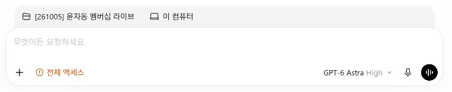
실습 전 기본 소개 · 강사 화면에서 위치와 쓰임을 확인합니다.
Codex는 목표를 받아 자료를 읽고, 도구로 작업하고, 결과를 확인하도록 도와주는 OpenAI의 AI 에이전트입니다.
| 달라지는 것 | 익숙한 질문·답변 방식 | 오늘 경험할 Codex 작업 |
|---|---|---|
| 질문 | 이 파일들을 어떻게 정리해? | 이 폴더를 읽고, 원본은 남긴 채 정리해줘. |
| 결과 | 방법과 설명을 읽는다. | 진행 보고와 실제 파일을 열어 확인한다. |
| 내 역할 | 답을 이해하고 직접 옮겨 실행한다. | 목표·범위·기준을 정하고 결과를 검토한다. |
우리가 주로 써온 질문·답변 방식과 오늘의 작업 방식을 비교합니다. 현재 ChatGPT도 파일을 만들고 도구를 사용할 수 있으며, ChatGPT Work도 실제 업무를 수행합니다.
공식 안내 · 2026-10-05 확인: 앱과 Codex 시작 · ChatGPT Work의 실제 작업 기능
Code + X는 농담이고, 정식 이름은 Codex임을 구분합니다.
“코드를 직접 안 써도 시작하니,
오늘은 코덱스 말고 코드 엑스라고 해볼까요?”
정식 제품명은 Codex(코덱스)입니다. AI가 뒤에서 코드를 사용할 수 있습니다. 사람이 코드를 먼저 배워야만 시작할 수 있다는 뜻은 아닙니다.
2026-10-05 확인한 OpenAI 공식 문서에서는 이름을 이렇게 지었다는 명명 이유를 확인하지 못했습니다. Code + X를 공식 약자·어원으로 설명하지 않습니다. 공식 근거를 확보하기 전에는 어원 대사를 추가하지 않습니다.
필요한 항목을 펼치세요. 상세 화면·추가 요청문·대체 실습도 여기에서 확인할 수 있습니다.
실습 전 기본 소개 · 강사 화면에서 위치와 쓰임을 확인합니다.
“코드를 직접 안 써도 시작하니,
오늘은 코덱스 말고 코드 엑스라고 해볼까요?”
정식 제품명은 Codex(코덱스)입니다. AI가 뒤에서 코드를 사용할 수 있습니다. 사람이 코드를 먼저 배워야만 시작할 수 있다는 뜻은 아닙니다.
2026-10-05 확인한 OpenAI 공식 문서에서는 이름을 이렇게 지었다는 명명 이유를 확인하지 못했습니다. Code + X를 공식 약자·어원으로 설명하지 않습니다. 공식 근거를 확보하기 전에는 어원 대사를 추가하지 않습니다.
내가 기술의 세부 절차를 모두 배워야만 시작할 수 있는 것은 아님을 이해합니다.
짧은 부탁 → 여러 단계의 실행 → 내가 확인
기차표 도우미 · 메일에서 준비 일정까지
OBS로 Codex 시연을 녹화하는 일까지
원하는 일은 내가 정하고, 실행 방법과 여러 단계를 AI에게 맡깁니다. 기술 용어를 모두 외우기 전에도 작은 실제 일부터 시작할 수 있습니다.
세 가지 활용 사례 보기오늘 맡겨보고 싶은 작은 일 하나를 떠올립니다.
변화는 가볍게 보지 말자.
시작은 어렵게 생각하지 말자.
도구가 바꾸는 일을 직접 경험하며, 내 업무에서 판단할 기준을 만듭니다.
모든 기능을 배울 때까지 기다리지 않습니다. 오늘은 Excel 통합과 주간 보고 PPT 제작을 해봅니다.
처음 결과를 그대로 믿기보다, 써보고 한 가지씩 고칩니다. 얼마나 도움이 되는지는 실제 내 일에 적용하고 확인합니다.
필요한 항목을 펼치세요. 상세 화면·추가 요청문·대체 실습도 여기에서 확인할 수 있습니다.
실습 전 기본 소개 · 강사 화면에서 위치와 쓰임을 확인합니다.
변화는 가볍게 보지 말자.
시작은 어렵게 생각하지 말자.
도구가 바꾸는 일을 직접 경험하며, 내 업무에서 판단할 기준을 만듭니다.
모든 기능을 배울 때까지 기다리지 않습니다. 오늘은 Excel 통합과 주간 보고 PPT 제작을 해봅니다.
처음 결과를 그대로 믿기보다, 써보고 한 가지씩 고칩니다. 얼마나 도움이 되는지는 실제 내 일에 적용하고 확인합니다.
내 계정의 사용 가능 모델·잔여량·초기화 시각을 확인합니다.
유료 가입이 무조건 필수는 아닙니다. 먼저 내 계정에서 쓸 수 있는 모델과 남은 사용량을 확인합니다.
| 개인 요금제 | 월 요금 · 원화 기준 | Codex 접근의 핵심 |
|---|---|---|
| Free | 0원 | 무료 범위 · 계정의 모델 목록 확인 |
| Go | 한국 공식 페이지에서 확인 | 데스크톱 Luna · 순차 적용 |
| Plus | 한국 공식 페이지에서 확인 | Luna · Terra · Sol · Astra / 계정별 목록 확인 |
| Pro | 선택 등급별 원화 금액 확인 | Plus 기능 + 티어별 사용 한도 |
원화 금액 확인: 2026-10-05 기준 유료 원화 금액은 미확인입니다. 한국 공식 요금 페이지 열기와 내 결제창에서 통화·최종 금액·결제 주기를 확인하세요.
한국 수강생은 원화로 표시된 최종 금액을 확인합니다. 웹·앱스토어 등 결제 경로에 따라 표시와 조건이 다를 수 있습니다. Free·Go의 Luna는 데스크톱 Standard 기준이며 순차 적용됩니다. GPT-6.1 Sol은 Plus 이상 출시 대상이고 Free·Go는 제외됩니다. Astra의 추론 옵션도 요금제·환경별로 다를 수 있습니다.
Plus·Pro는 로컬 파일 작업과 클라우드, 플러그인, 예약, 이미지 생성·편집, 음성 기능을 지원합니다. 실제 이용에는 지역·출시·연결·관리자 조건이 따릅니다. Codex의 이미지 생성은 Free에서 지원하지 않습니다. Free·Go의 다른 기능을 유료 요금제와 동일하다고 전제하지 않습니다.
| 조직용 | 공식 표시 가격 | 수업에서 알아둘 점 |
|---|---|---|
| Business | 원화 금액은 한국 공식/결제 페이지에서 확인 · 2인 이상 | 조직 관리 기능. Standard 좌석의 아래 사용량은 Plus와 같음 |
| Enterprise / Edu | 계약에 따라 결정 | 관리자가 모델·기능을 허용해야 함. 유연 과금은 크레딧 기준 |
Enterprise·Edu의 GPT-6.1 Sol은 관리자 활성화가 필요합니다. API 키 사용은 ChatGPT 구독과 별도 과금이며 이번 수업의 준비물이 아닙니다.
| 모델 | Plus · 로컬 메시지 추정 / 5시간 | 우리 실습에 적용할 예시 |
|---|---|---|
| GPT-6 Luna | 350–3,000 | 규칙이 분명한 분류·추출·짧은 수정 |
| GPT-6.1 Sol | 15–160 | 여러 메모 대조·문서 생성과 수정 |
| GPT-6 Astra | 5–45 | 복잡한 판단·해결이 어려운 작업 |
| GPT-5.6 Terra | 현재 공식 표에 별도 수치 없음 | 이전 세대 균형형 · 명확한 업무 |
위 수치는 Plus와 Standard Business의 로컬 메시지 추정치입니다. 표의 모델별 횟수를 더하거나 각각 별도 몫으로 계산하지 않습니다. 메시지 1개가 문서 1개·작업 1건을 뜻하지 않습니다. 모델·자료 양·대화 맥락·추론·도구 사용에 따라 소모량이 달라집니다.
로컬·클라우드와 ChatGPT Work는 사용량을 공유하고 주간 한도가 적용될 수 있습니다. 현재 Pro에는 5시간 한도가 없다고 안내하지만 무제한 작업을 뜻하지 않습니다. Free·Go 및 Pro 티어별 확정 작업 건수는 확인한 문서에 없으므로 계정 사용량 화면을 기준으로 합니다.
Terra는 현재 GPT-5.6 Terra로 남아 있는 이전 세대 균형형 모델입니다. 단순하고 명확한 업무에서 검토할 수 있습니다. 규칙이 분명한 파일 분류·짧은 수정은 Luna, 메모 여러 개를 대조해 문서로 만들 때는 Sol, 어려운 판단에는 Astra를 검토합니다. 가벼운 모델의 결과가 기준에 못 미치면 요청과 자료를 정리하고 모델을 높입니다.
처음에는 표시된 기본 추론 설정과 Standard 속도로 시작합니다. 매번 최대 추론을 고르지 않습니다. Fast는 포함 사용량을 Standard의2.5배 속도로 소모합니다. 이는 작업이2.5배 빨라진다는 뜻이 아닙니다.
한도에 닿으면 초기화 시각을 확인하고 이어갑니다. Plus·Pro는 추가 크레딧 구매 선택지도 있습니다. 구매가 이번 실습의 필수 조건은 아닙니다. 모델이 안 보이거나 한도가 부족하면 강사 시연으로 관찰 참여한 뒤 복습하세요. 특정 요금제로 수업 실습 완주를 보장하지 않습니다.
2026-10-05 공식 안내 확인 · 요금·한도 · 모델·접근 조건 · 속도와 사용량
필요한 항목을 펼치세요. 상세 화면·추가 요청문·대체 실습도 여기에서 확인할 수 있습니다.
실습 전 기본 소개 · 강사 화면에서 위치와 쓰임을 확인합니다.
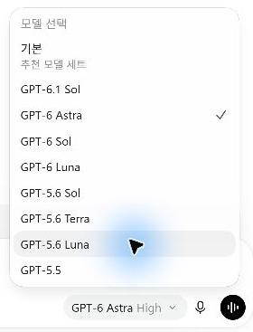
유료 가입이 무조건 필수는 아닙니다. 먼저 내 계정에서 쓸 수 있는 모델과 남은 사용량을 확인합니다.
| 개인 요금제 | 월 요금 · 원화 기준 | Codex 접근의 핵심 |
|---|---|---|
| Free | 0원 | 무료 범위 · 계정의 모델 목록 확인 |
| Go | 한국 공식 페이지에서 확인 | 데스크톱 Luna · 순차 적용 |
| Plus | 한국 공식 페이지에서 확인 | Luna · Terra · Sol · Astra / 계정별 목록 확인 |
| Pro | 선택 등급별 원화 금액 확인 | Plus 기능 + 티어별 사용 한도 |
원화 금액 확인: 2026-10-05 기준 유료 원화 금액은 미확인입니다. 한국 공식 요금 페이지 열기와 내 결제창에서 통화·최종 금액·결제 주기를 확인하세요.
한국 수강생은 원화로 표시된 최종 금액을 확인합니다. 웹·앱스토어 등 결제 경로에 따라 표시와 조건이 다를 수 있습니다. Free·Go의 Luna는 데스크톱 Standard 기준이며 순차 적용됩니다. GPT-6.1 Sol은 Plus 이상 출시 대상이고 Free·Go는 제외됩니다. Astra의 추론 옵션도 요금제·환경별로 다를 수 있습니다.
Plus·Pro는 로컬 파일 작업과 클라우드, 플러그인, 예약, 이미지 생성·편집, 음성 기능을 지원합니다. 실제 이용에는 지역·출시·연결·관리자 조건이 따릅니다. Codex의 이미지 생성은 Free에서 지원하지 않습니다. Free·Go의 다른 기능을 유료 요금제와 동일하다고 전제하지 않습니다.
| 조직용 | 공식 표시 가격 | 수업에서 알아둘 점 |
|---|---|---|
| Business | 원화 금액은 한국 공식/결제 페이지에서 확인 · 2인 이상 | 조직 관리 기능. Standard 좌석의 아래 사용량은 Plus와 같음 |
| Enterprise / Edu | 계약에 따라 결정 | 관리자가 모델·기능을 허용해야 함. 유연 과금은 크레딧 기준 |
Enterprise·Edu의 GPT-6.1 Sol은 관리자 활성화가 필요합니다. API 키 사용은 ChatGPT 구독과 별도 과금이며 이번 수업의 준비물이 아닙니다.
| 모델 | Plus · 로컬 메시지 추정 / 5시간 | 우리 실습에 적용할 예시 |
|---|---|---|
| GPT-6 Luna | 350–3,000 | 규칙이 분명한 분류·추출·짧은 수정 |
| GPT-6.1 Sol | 15–160 | 여러 메모 대조·문서 생성과 수정 |
| GPT-6 Astra | 5–45 | 복잡한 판단·해결이 어려운 작업 |
| GPT-5.6 Terra | 현재 공식 표에 별도 수치 없음 | 이전 세대 균형형 · 명확한 업무 |
위 수치는 Plus와 Standard Business의 로컬 메시지 추정치입니다. 표의 모델별 횟수를 더하거나 각각 별도 몫으로 계산하지 않습니다. 메시지 1개가 문서 1개·작업 1건을 뜻하지 않습니다. 모델·자료 양·대화 맥락·추론·도구 사용에 따라 소모량이 달라집니다.
로컬·클라우드와 ChatGPT Work는 사용량을 공유하고 주간 한도가 적용될 수 있습니다. 현재 Pro에는 5시간 한도가 없다고 안내하지만 무제한 작업을 뜻하지 않습니다. Free·Go 및 Pro 티어별 확정 작업 건수는 확인한 문서에 없으므로 계정 사용량 화면을 기준으로 합니다.
Terra는 현재 GPT-5.6 Terra로 남아 있는 이전 세대 균형형 모델입니다. 단순하고 명확한 업무에서 검토할 수 있습니다. 규칙이 분명한 파일 분류·짧은 수정은 Luna, 메모 여러 개를 대조해 문서로 만들 때는 Sol, 어려운 판단에는 Astra를 검토합니다. 가벼운 모델의 결과가 기준에 못 미치면 요청과 자료를 정리하고 모델을 높입니다.
처음에는 표시된 기본 추론 설정과 Standard 속도로 시작합니다. 매번 최대 추론을 고르지 않습니다. Fast는 포함 사용량을 Standard의2.5배 속도로 소모합니다. 이는 작업이2.5배 빨라진다는 뜻이 아닙니다.
한도에 닿으면 초기화 시각을 확인하고 이어갑니다. Plus·Pro는 추가 크레딧 구매 선택지도 있습니다. 구매가 이번 실습의 필수 조건은 아닙니다. 모델이 안 보이거나 한도가 부족하면 강사 시연으로 관찰 참여한 뒤 복습하세요. 특정 요금제로 수업 실습 완주를 보장하지 않습니다.
2026-10-05 공식 안내 확인 · 요금·한도 · 모델·접근 조건 · 속도와 사용량
요청·멈춤·방향 수정·설정의 위치를 강사 화면에서 찾습니다.
설명과 요청문은 이 페이지에서 확인하고, 실제 조작과 결과 확인 때만 Codex로 전환하세요. 아래 다음 버튼으로 수업을 이어갑니다.
가속페달 · 브레이크 · 핸들 · 기어
원하는 결과를 말하고 일을 시작합니다.
진행을 멈추거나 실행 전 확인을 요청합니다.
자료 위치·지킬 기준·수정할 한 가지를 정합니다.
일에 맞는 모델과 생각할 정도를 선택합니다.
모든 버튼을 외울 필요는 없습니다. 어디에 부탁하고, 어떻게 멈추고, 무엇을 확인하는지만 먼저 익힙니다.
플러그인·예약·dot은 이어서 배울 주제입니다. 자세한 사용은 후속 라이브와 다른 파트너 컨설턴트 강의에서 차근차근 다룹니다.
필요한 항목을 펼치세요. 상세 화면·추가 요청문·대체 실습도 여기에서 확인할 수 있습니다.
실습 전 기본 소개 · 강사 화면에서 위치와 쓰임을 확인합니다.
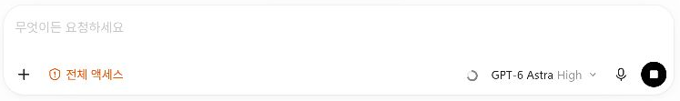
가속페달 · 브레이크 · 핸들 · 기어
원하는 결과를 말하고 일을 시작합니다.
진행을 멈추거나 실행 전 확인을 요청합니다.
자료 위치·지킬 기준·수정할 한 가지를 정합니다.
일에 맞는 모델과 생각할 정도를 선택합니다.
모든 버튼을 외울 필요는 없습니다. 어디에 부탁하고, 어떻게 멈추고, 무엇을 확인하는지만 먼저 익힙니다.
플러그인·예약·dot은 이어서 배울 주제입니다. 자세한 사용은 후속 라이브와 다른 파트너 컨설턴트 강의에서 차근차근 다룹니다.
자료만 붙이지 않고 “이 자료로 무엇을 해줘”까지 말합니다.
| 형식 | 오늘의 설명 |
|---|---|
| 텍스트 | 원하는 결과를 일상 언어로 씁니다. |
| 이미지·화면 캡처 | 문제 화면을 첨부하고 어느 부분을 봐야 하는지 씁니다. |
| 음성 | 음성 입력 또는 지원되는 음성 대화로 지시할 수 있습니다. 제공 여부는 앱·계정에서 확인합니다. |
| 영상·그 밖의 파일 | 영상 파일을 자료로 다루는 것과 입력창이 영상을 직접 이해하는 것은 다릅니다. 지원 형식·도구를 확인하고, 필요하면 장면 캡처·대본으로 전달합니다. |
공식 안내 · 2026-10-05 확인: 이미지를 요청에 사용하기 · 음성 대화와 음성 입력
필요한 항목을 펼치세요. 상세 화면·추가 요청문·대체 실습도 여기에서 확인할 수 있습니다.
실습 전 기본 소개 · 강사 화면에서 위치와 쓰임을 확인합니다.
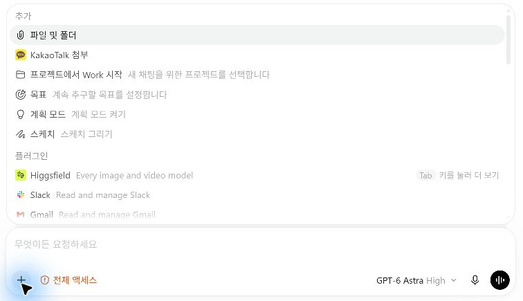
| 형식 | 오늘의 설명 |
|---|---|
| 텍스트 | 원하는 결과를 일상 언어로 씁니다. |
| 이미지·화면 캡처 | 문제 화면을 첨부하고 어느 부분을 봐야 하는지 씁니다. |
| 음성 | 음성 입력 또는 지원되는 음성 대화로 지시할 수 있습니다. 제공 여부는 앱·계정에서 확인합니다. |
| 영상·그 밖의 파일 | 영상 파일을 자료로 다루는 것과 입력창이 영상을 직접 이해하는 것은 다릅니다. 지원 형식·도구를 확인하고, 필요하면 장면 캡처·대본으로 전달합니다. |
공식 안내 · 2026-10-05 확인: 이미지를 요청에 사용하기 · 음성 대화와 음성 입력
계획을 검토한 뒤 실행으로 전환하는 순서를 설명합니다.
바로 만들기 전에, 내 의도와 기준에 맞는 계획부터 충분히 다듬습니다.
/plan을 입력해 선택합니다.보고서 구성이나 앱 기능처럼 결정할 내용이 많고, 실행 전에 방향을 합의하고 싶을 때 사용합니다. 계획 모드가 실제로 켜져 있으면 매번 “아직 만들지 마”를 덧붙일 부담이 줄어듭니다.
계획만 잘 나왔다고 결과 파일이 완성된 것은 아닙니다. 구현 뒤에는 실제 결과를 확인합니다.
OpenAI 공식 안내 · 2026-10-05 확인: 입력창 명령 · 계획 요청 · 목표 이어가기 · 진행 제어
필요한 항목을 펼치세요. 상세 화면·추가 요청문·대체 실습도 여기에서 확인할 수 있습니다.
입력창에서 작업의 진행 방식을 선택합니다.
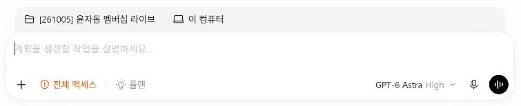
바로 만들기 전에, 내 의도와 기준에 맞는 계획부터 충분히 다듬습니다.
/plan을 입력해 선택합니다.보고서 구성이나 앱 기능처럼 결정할 내용이 많고, 실행 전에 방향을 합의하고 싶을 때 사용합니다. 계획 모드가 실제로 켜져 있으면 매번 “아직 만들지 마”를 덧붙일 부담이 줄어듭니다.
계획만 잘 나왔다고 결과 파일이 완성된 것은 아닙니다. 구현 뒤에는 실제 결과를 확인합니다.
OpenAI 공식 안내 · 2026-10-05 확인: 입력창 명령 · 계획 요청 · 목표 이어가기 · 진행 제어
일반 요청과 지속 목표의 차이, 멈출 조건을 구분합니다.
일반 대화에도 목적은 있습니다. 골 모드는 그 목적을 대화의 지속 목표로 등록합니다.
| 구분 | 일반 요청 | 골 모드 |
|---|---|---|
| 진행 | 한 요청 안에서도 여러 단계를 수행하고 결과를 보고 | 목표가 미완료면 여러 응답에 걸쳐 다음 작업을 이어감 |
| 알맞은 일 | 두 문장 작성, 단순 수정, 결과를 보며 직접 이끌 작업 | 검사 결과에 따라 수정·재검사가 반복되는 작업 |
| 내가 정할 것 | 원하는 결과와 지킬 기준 | 목표·완료 조건·범위·검증 방법 |
“이번 주 메모와 양식으로 PPT 5장을 만들고, 원문의 숫자와 모든 장의 잘림 검사를 충족할 때까지 수정해줘. 원본은 보존하고 결과는 output에 저장해줘. 검토할 수 없는 부분은 따로 알려줘.”
목표가 분명하고 스스로 확인할 기준이 있는 일에 적합합니다. “계속 더 좋게 해줘”처럼 끝을 정하지 않은 부탁은 피합니다. 활성화되면 입력창 위 목표 진행 표시에서 일시정지·재개·수정·해제를 관리합니다. 기능·권한·사용량 한도가 확대되는 것은 아니며, 필요한 입력이나 중지·한도에 따라 멈출 수 있습니다.
먼저 계획 모드로 완료 조건을 정리하고, 계획 검토를 마친 뒤 골 모드로 이어갈 수도 있습니다. 오늘 공통 실습에서는 강사와 단계별로 결과를 맞추므로 골 모드 실행을 필수로 요구하지 않습니다.
OpenAI 공식 안내 · 2026-10-05 확인: 입력창 명령 · 계획 요청 · 목표 이어가기 · 진행 제어
필요한 항목을 펼치세요. 상세 화면·추가 요청문·대체 실습도 여기에서 확인할 수 있습니다.
입력창에서 작업의 진행 방식을 선택합니다.
일반 대화에도 목적은 있습니다. 골 모드는 그 목적을 대화의 지속 목표로 등록합니다.
| 구분 | 일반 요청 | 골 모드 |
|---|---|---|
| 진행 | 한 요청 안에서도 여러 단계를 수행하고 결과를 보고 | 목표가 미완료면 여러 응답에 걸쳐 다음 작업을 이어감 |
| 알맞은 일 | 두 문장 작성, 단순 수정, 결과를 보며 직접 이끌 작업 | 검사 결과에 따라 수정·재검사가 반복되는 작업 |
| 내가 정할 것 | 원하는 결과와 지킬 기준 | 목표·완료 조건·범위·검증 방법 |
“이번 주 메모와 양식으로 PPT 5장을 만들고, 원문의 숫자와 모든 장의 잘림 검사를 충족할 때까지 수정해줘. 원본은 보존하고 결과는 output에 저장해줘. 검토할 수 없는 부분은 따로 알려줘.”
목표가 분명하고 스스로 확인할 기준이 있는 일에 적합합니다. “계속 더 좋게 해줘”처럼 끝을 정하지 않은 부탁은 피합니다. 활성화되면 입력창 위 목표 진행 표시에서 일시정지·재개·수정·해제를 관리합니다. 기능·권한·사용량 한도가 확대되는 것은 아니며, 필요한 입력이나 중지·한도에 따라 멈출 수 있습니다.
먼저 계획 모드로 완료 조건을 정리하고, 계획 검토를 마친 뒤 골 모드로 이어갈 수도 있습니다. 오늘 공통 실습에서는 강사와 단계별로 결과를 맞추므로 골 모드 실행을 필수로 요구하지 않습니다.
OpenAI 공식 안내 · 2026-10-05 확인: 입력창 명령 · 계획 요청 · 목표 이어가기 · 진행 제어
메뉴·명령·자연어를 알고 실제 활성화 표시를 확인합니다.
입력창의 ＋ → 계획 모드 또는 목표(골 모드). 실제 표시 이름과 제공 여부는 내 앱에서 확인합니다.
/plan 또는 /goal을 입력하고 목록의 항목을 선택합니다. 명령 문자열만 입력한 채 보내기 전에 선택 상태를 확인합니다.
“계획 모드로 진행해줘. 필요한 내용을 먼저 물어보고 구성안을 보여줘.”
“골 모드로 진행해줘. 목표는 …이고 완료 기준은 …야.”
계획을 부탁하는 자연어는 사용할 수 있지만, 그 문장만으로 입력창의 계획 모드가 켜졌다고 단정하지 않습니다. 표시가 없다면 ＋ 메뉴나 /plan으로 켭니다. 골 모드는 목표 등록 후 입력창 위의 목표 진행 표시를 확인합니다.
계획 설명을 들었다고 골이 등록된 것은 아닙니다. 기능이 없는 환경은 일반 대화에서 계획·실행·검토를 나누어 진행할 수 있습니다.
OpenAI 공식 안내 · 2026-10-05 확인: 입력창 명령 · 계획 요청 · 목표 이어가기 · 진행 제어
필요한 항목을 펼치세요. 상세 화면·추가 요청문·대체 실습도 여기에서 확인할 수 있습니다.
입력창에서 작업의 진행 방식을 선택합니다.
/plan 또는 /goal을 적고 표시된 명령을 선택합니다. 영어 철자 앞의 /도 포함합니다.입력창의 ＋ → 계획 모드 또는 목표(골 모드). 실제 표시 이름과 제공 여부는 내 앱에서 확인합니다.
/plan 또는 /goal을 입력하고 목록의 항목을 선택합니다. 명령 문자열만 입력한 채 보내기 전에 선택 상태를 확인합니다.
“계획 모드로 진행해줘. 필요한 내용을 먼저 물어보고 구성안을 보여줘.”
“골 모드로 진행해줘. 목표는 …이고 완료 기준은 …야.”
계획을 부탁하는 자연어는 사용할 수 있지만, 그 문장만으로 입력창의 계획 모드가 켜졌다고 단정하지 않습니다. 표시가 없다면 ＋ 메뉴나 /plan으로 켭니다. 골 모드는 목표 등록 후 입력창 위의 목표 진행 표시를 확인합니다.
계획 설명을 들었다고 골이 등록된 것은 아닙니다. 기능이 없는 환경은 일반 대화에서 계획·실행·검토를 나누어 진행할 수 있습니다.
OpenAI 공식 안내 · 2026-10-05 확인: 입력창 명령 · 계획 요청 · 목표 이어가기 · 진행 제어
캡처와 앱샷이 어떤 화면 정보를 보내는지 설명할 수 있습니다.
Win + Shift + S
영역 선택 → 입력창에 붙여넣기 → 첨부 확인
보여줄 창을 맨 앞으로 → 양쪽 Alt 키
설정한 단축키가 다르면 앱 설정 확인
“이 화면에서 다음에 어디를 눌러야 하는지 알려줘.”처럼 질문을 붙입니다. 앱샷은 창 이미지와 읽을 수 있는 텍스트를 함께 전달할 수 있습니다. 캡처 후 보낼 대화와 첨부 내용을 확인합니다.
앱샷 첨부만으로 화면이 계속 실시간 공유되는 것은 아닙니다. macOS 앱샷 기본 단축키는 양쪽 Command 키입니다.
공식 안내 · 2026-10-05 확인: 앱샷
필요한 항목을 펼치세요. 상세 화면·추가 요청문·대체 실습도 여기에서 확인할 수 있습니다.
실습 전 기본 소개 · 강사 화면에서 위치와 쓰임을 확인합니다.
Win + Shift + S
영역 선택 → 입력창에 붙여넣기 → 첨부 확인
보여줄 창을 맨 앞으로 → 양쪽 Alt 키
설정한 단축키가 다르면 앱 설정 확인
“이 화면에서 다음에 어디를 눌러야 하는지 알려줘.”처럼 질문을 붙입니다. 앱샷은 창 이미지와 읽을 수 있는 텍스트를 함께 전달할 수 있습니다. 캡처 후 보낼 대화와 첨부 내용을 확인합니다.
앱샷 첨부만으로 화면이 계속 실시간 공유되는 것은 아닙니다. macOS 앱샷 기본 단축키는 양쪽 Command 키입니다.
공식 안내 · 2026-10-05 확인: 앱샷
현재 권한·모델·추론 설정과 중지 위치를 찾습니다.
| 구분 | 자동차로 떠올리면 | AI에서의 뜻 |
|---|---|---|
| 모델 | 어떤 차·엔진을 고를까? | 학습된 AI 선택 · 강점·처리 능력·속도·비용 차이 |
| 추론 강도 | 같은 차로 경로·위험을 얼마나 살필까? | 답을 내고 작업할 때 검토에 들일 노력 조절 |
가까운 마트 길과 낯선 산길에 필요한 준비가 다르듯, 단순 수정과 복잡한 분석에 필요한 검토도 다릅니다. 회사들은 필요한 품질·기다리는 시간·사용량을 조절할 수 있도록 선택지를 제공합니다. 기본값으로 시작하고 결과가 부족할 때 자료·조건을 보완한 뒤 설정을 조정합니다. 매번 선택할 의무는 없습니다. 자동차 비유와 선택 기준 자세히 보기
| 설정 | 뜻 | 오늘 볼 것 |
|---|---|---|
| 작업 권한 | 어떤 파일·네트워크에 접근하고 언제 승인을 받을지 | 입력창 주변의 권한 메뉴와 현재 설정 |
| 모델 | 일을 수행할 AI 선택 | 내 계정에 실제로 표시되는 모델 |
| 추론 깊이 | 문제를 얼마나 깊게 검토하도록 할지 | 기본값에서 시작하고 복잡한 일에 조정 |
추론을 높이면 더 오래 걸리고 사용량이 늘 수 있습니다. 권한을 넓힌다고 정확도가 높아지는 것은 아닙니다. 처음에는 현재 설정을 확인하고, “먼저 계획만 보여줘”처럼 요청의 범위를 명시합니다.
중지 버튼은 진행 중인 응답·작업을 멈추는 데 사용합니다. 이미 저장하거나 실행한 변경을 자동으로 되돌리는 버튼은 아닙니다.
공식 안내 · 2026-10-05 확인: 권한과 승인 · 모델과 추론 설정
Terra는 현재 GPT-5.6 Terra로 남아 있는 이전 세대 균형형 모델입니다. 단순하고 명확한 업무에서 검토할 수 있습니다. 규칙이 분명한 파일 분류·짧은 수정은 Luna, 메모 여러 개를 대조해 문서로 만들 때는 Sol, 어려운 판단에는 Astra를 검토합니다. 가벼운 모델의 결과가 기준에 못 미치면 요청과 자료를 정리하고 모델을 높입니다.
처음에는 표시된 기본 추론 설정과 Standard 속도로 시작합니다. 매번 최대 추론을 고르지 않습니다. Fast는 포함 사용량을 Standard의2.5배 속도로 소모합니다. 이는 작업이2.5배 빨라진다는 뜻이 아닙니다.
라이브 요금 안내 · 이 페이지 상세 안내의 요금·사용량 표
필요한 항목을 펼치세요. 상세 화면·추가 요청문·대체 실습도 여기에서 확인할 수 있습니다.
실습 전 기본 소개 · 강사 화면에서 위치와 쓰임을 확인합니다.
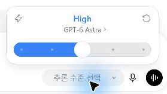
| 이름 · 현재 표시 예 | 쉽게 이해하는 선택 기준 |
|---|---|
| Luna · GPT-6 | 요약·추출처럼 범위가 분명하고 반복하는 일 |
| Terra · GPT-5.6 | 이전 세대의 균형형 · 단순하고 명확한 업무 |
| Sol · GPT-6.1 | 여러 자료를 다루는 복합 작업·문서 작성 |
| Astra · GPT-6 | 판단과 검토가 많이 필요한 어려운 작업 |
2026-10-05 강사 앱에서 GPT-5.6 Terra를 직접 확인했습니다. 최신 공식 안내에서도 GPT-5.6 Sol·Terra·Luna는 새 모델 적용 기간에 계속 제공된다고 설명합니다. Terra를 GPT-6 모델로 부르지 않습니다. 위 업무 예시는 선택을 돕는 설명이며 성능 순위나 정답 보장이 아닙니다. 실제로 선택 가능한 목록은 내 계정에서 확인하세요.
| 구분 | 자동차로 떠올리면 | AI에서의 뜻 |
|---|---|---|
| 모델 | 어떤 차·엔진을 고를까? | 학습된 AI 선택 · 강점·처리 능력·속도·비용 차이 |
| 추론 강도 | 같은 차로 경로·위험을 얼마나 살필까? | 답을 내고 작업할 때 검토에 들일 노력 조절 |
모델은 학습을 마친 AI의 종류입니다. 각 모델은 잘하는 일과 속도·사용량이 다릅니다. 추론 강도는 같은 모델이 이번 문제를 풀고 확인하는 데 들일 노력을 조절합니다. 모델 자체를 다시 학습시키거나 새 지식을 넣는 설정은 아닙니다.
파일명 형식 통일
필요한 값 추출
엇갈린 메모 대조
여러 조건의 계획
필요한 수준의 결과를
감당할 시간·비용 안에
사용자가 맡기는 일의 난이도와 원하는 응답 시간·예산이 다르기 때문입니다. 더 많은 계산과 검토는 어려운 문제에 도움이 될 수 있지만 시간과 사용량도 필요합니다. OpenAI와 Claude를 만드는 Anthropic 모두 능력·속도·비용 사이의 선택을 안내합니다. 모든 요청을 가장 무거운 설정으로 처리할 필요는 없습니다.
가까운 마트에 가는 길과 낯선 산길을 가는 준비가 다르듯, 파일명 한 줄을 바꾸는 일과 서로 다른 자료를 대조해 계획을 짜는 일의 설정도 달라질 수 있습니다. 이 자동차 이야기는 이해를 돕는 비유입니다. 추론 High를 자동차의 고단 기어·고속 주행과 일대일로 연결하지 않습니다.
추론을 높여도 정답이 보장되거나 작은 모델이 다른 모델로 바뀌지는 않습니다. 높은 추론이 결과를 얼마나 개선하는지는 작업마다 다릅니다. 모델·추론 선택은 파일 접근 권한과도 별개입니다. Fast 속도 모드는 추론 강도와 다른 설정입니다.
원리 참고 · 2026-10-05 확인: OpenAI 모델·추론 안내 · Anthropic 모델 선택 · Anthropic 검토량과 응답 시간
실습 전 기본 소개 · 강사 화면에서 위치와 쓰임을 확인합니다.
| 구분 | 자동차로 떠올리면 | AI에서의 뜻 |
|---|---|---|
| 모델 | 어떤 차·엔진을 고를까? | 학습된 AI 선택 · 강점·처리 능력·속도·비용 차이 |
| 추론 강도 | 같은 차로 경로·위험을 얼마나 살필까? | 답을 내고 작업할 때 검토에 들일 노력 조절 |
가까운 마트 길과 낯선 산길에 필요한 준비가 다르듯, 단순 수정과 복잡한 분석에 필요한 검토도 다릅니다. 회사들은 필요한 품질·기다리는 시간·사용량을 조절할 수 있도록 선택지를 제공합니다. 기본값으로 시작하고 결과가 부족할 때 자료·조건을 보완한 뒤 설정을 조정합니다. 매번 선택할 의무는 없습니다. 자동차 비유와 선택 기준 자세히 보기
| 설정 | 뜻 | 오늘 볼 것 |
|---|---|---|
| 작업 권한 | 어떤 파일·네트워크에 접근하고 언제 승인을 받을지 | 입력창 주변의 권한 메뉴와 현재 설정 |
| 모델 | 일을 수행할 AI 선택 | 내 계정에 실제로 표시되는 모델 |
| 추론 깊이 | 문제를 얼마나 깊게 검토하도록 할지 | 기본값에서 시작하고 복잡한 일에 조정 |
추론을 높이면 더 오래 걸리고 사용량이 늘 수 있습니다. 권한을 넓힌다고 정확도가 높아지는 것은 아닙니다. 처음에는 현재 설정을 확인하고, “먼저 계획만 보여줘”처럼 요청의 범위를 명시합니다.
중지 버튼은 진행 중인 응답·작업을 멈추는 데 사용합니다. 이미 저장하거나 실행한 변경을 자동으로 되돌리는 버튼은 아닙니다.
공식 안내 · 2026-10-05 확인: 권한과 승인 · 모델과 추론 설정
Terra는 현재 GPT-5.6 Terra로 남아 있는 이전 세대 균형형 모델입니다. 단순하고 명확한 업무에서 검토할 수 있습니다. 규칙이 분명한 파일 분류·짧은 수정은 Luna, 메모 여러 개를 대조해 문서로 만들 때는 Sol, 어려운 판단에는 Astra를 검토합니다. 가벼운 모델의 결과가 기준에 못 미치면 요청과 자료를 정리하고 모델을 높입니다.
처음에는 표시된 기본 추론 설정과 Standard 속도로 시작합니다. 매번 최대 추론을 고르지 않습니다. Fast는 포함 사용량을 Standard의2.5배 속도로 소모합니다. 이는 작업이2.5배 빨라진다는 뜻이 아닙니다.
라이브 요금 안내 · 이 페이지 상세 안내의 요금·사용량 표
대화 기록에서 결과 파일을 찾아 열어볼 위치를 압니다.
자료와 반복 규칙
└ 대화 A요청 → 진행 → 결과
파일 미리보기
브라우저
터미널 등
대화 기록에는 내 요청과 작업 진행 보고·결과가 남습니다. 모든 내부 사고 과정이 표시되는 것은 아닙니다. 결과 파일 링크를 눌러 내용과 저장 위치를 확인합니다.
오른쪽은 “결과·작업 패널”이라고 부르겠습니다. 파일 미리보기, 브라우저, 통합 터미널 등을 탭으로 열 수 있습니다. 내장 브라우저·통합 터미널이라는 표현은 공식 안내에도 사용됩니다.
보이는 파일 탐색 기능은 앱 버전에 따라 다릅니다. 모든 외부 앱이 오른쪽에 내장되는 것은 아니며, 웹·앱 조작에는 지원 도구와 권한이 필요합니다. 오늘 터미널 명령은 직접 입력하지 않습니다.
공식 안내 · 2026-10-05 확인: 파일 미리보기 · 앱 안의 브라우저 · 통합 터미널
필요한 항목을 펼치세요. 상세 화면·추가 요청문·대체 실습도 여기에서 확인할 수 있습니다.
실습 전 기본 소개 · 강사 화면에서 위치와 쓰임을 확인합니다.
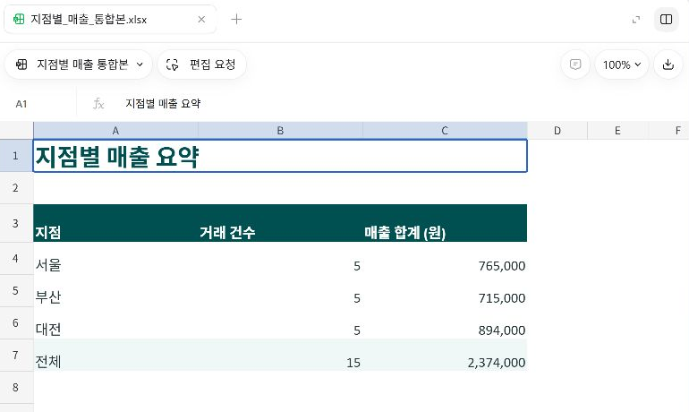
자료와 반복 규칙
└ 대화 A요청 → 진행 → 결과
파일 미리보기
브라우저
터미널 등
대화 기록에는 내 요청과 작업 진행 보고·결과가 남습니다. 모든 내부 사고 과정이 표시되는 것은 아닙니다. 결과 파일 링크를 눌러 내용과 저장 위치를 확인합니다.
오른쪽은 “결과·작업 패널”이라고 부르겠습니다. 파일 미리보기, 브라우저, 통합 터미널 등을 탭으로 열 수 있습니다. 내장 브라우저·통합 터미널이라는 표현은 공식 안내에도 사용됩니다.
보이는 파일 탐색 기능은 앱 버전에 따라 다릅니다. 모든 외부 앱이 오른쪽에 내장되는 것은 아니며, 웹·앱 조작에는 지원 도구와 권한이 필요합니다. 오늘 터미널 명령은 직접 입력하지 않습니다.
공식 안내 · 2026-10-05 확인: 파일 미리보기 · 앱 안의 브라우저 · 통합 터미널
프로젝트 이름·작업 폴더·현재 대화를 구분할 수 있습니다.
관련 자료와 여러 대화를 모으는 작업 자리
한 결과를 위해 부탁하고 확인하는 대화 흐름
오늘의 로컬 프로젝트는 PC 폴더를 선택해 만듭니다. 소스 폴더는 “오늘 사용할 자료가 있는 기본 작업 폴더”입니다. 개발 코드만 들어 있어야 하는 것은 아닙니다.
같은 작업의 수정은 같은 대화에서 이어갑니다. 다른 결과를 만들 때는 같은 프로젝트 안에서 새 대화를 시작할 수 있습니다. 새 대화가 앞선 대화 전문을 자동으로 모두 안다고 가정하지 않습니다.
공식 안내 · 2026-10-05 확인: 프로젝트와 대화
필요한 항목을 펼치세요. 상세 화면·추가 요청문·대체 실습도 여기에서 확인할 수 있습니다.
실습 전 기본 소개 · 강사 화면에서 위치와 쓰임을 확인합니다.
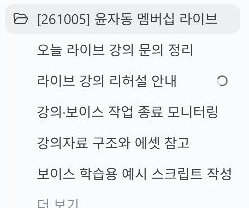
관련 자료와 여러 대화를 모으는 작업 자리
한 결과를 위해 부탁하고 확인하는 대화 흐름
오늘의 로컬 프로젝트는 PC 폴더를 선택해 만듭니다. 소스 폴더는 “오늘 사용할 자료가 있는 기본 작업 폴더”입니다. 개발 코드만 들어 있어야 하는 것은 아닙니다.
같은 작업의 수정은 같은 대화에서 이어갑니다. 다른 결과를 만들 때는 같은 프로젝트 안에서 새 대화를 시작할 수 있습니다. 새 대화가 앞선 대화 전문을 자동으로 모두 안다고 가정하지 않습니다.
공식 안내 · 2026-10-05 확인: 프로젝트와 대화
반복 규칙을 부탁할 때 저장 위치와 적용 여부도 확인합니다.
“이번만 이렇게 해줘”와 “이 프로젝트에서 앞으로도 이렇게 해줘”를 구분합니다. 반복 규칙은 프로젝트의 지침 파일에 저장하도록 부탁하고, 저장 경로와 내용을 확인합니다.
다음은 이 프로젝트에서 앞으로 반복 적용할 작업 규칙이야. 원본은 남기고 결과는 별도 폴더에 저장해. 완료하면 저장 위치와 확인한 내용을 알려줘. 이 프로젝트의 AGENTS.md에 기존 규칙을 보존하면서 기록해줘. 저장한 경로와 내용을 보여주고, 새 대화에서도 어떤 규칙을 읽었는지 확인할 수 있게 해줘.
새 대화에서는 “이 프로젝트의 작업 규칙을 읽고 적용할 핵심을 알려줘”라고 확인할 수 있습니다. 저장된 규칙과 원본 파일이 다음 대화의 근거가 됩니다. 모든 대화 내용이 자동 공유된다는 뜻은 아닙니다.
공식 안내 · 2026-10-05 확인: 프로젝트의 AGENTS.md
필요한 항목을 펼치세요. 상세 화면·추가 요청문·대체 실습도 여기에서 확인할 수 있습니다.
실습 전 기본 소개 · 강사 화면에서 위치와 쓰임을 확인합니다.
“이번만 이렇게 해줘”와 “이 프로젝트에서 앞으로도 이렇게 해줘”를 구분합니다. 반복 규칙은 프로젝트의 지침 파일에 저장하도록 부탁하고, 저장 경로와 내용을 확인합니다.
공통 요청문은 이 단계 위쪽의 복사 버튼을 사용하세요.
새 대화에서는 “이 프로젝트의 작업 규칙을 읽고 적용할 핵심을 알려줘”라고 확인할 수 있습니다. 저장된 규칙과 원본 파일이 다음 대화의 근거가 됩니다. 모든 대화 내용이 자동 공유된다는 뜻은 아닙니다.
공식 안내 · 2026-10-05 확인: 프로젝트의 AGENTS.md
어디서 일하는지와 어디까지 할 수 있는지가 별개임을 압니다.
오늘 우선 사용할 자료와 결과의 기준 위치
파일 접근·수정·네트워크와 승인 조건
폴더를 선택했다고 그 밖의 모든 파일 접근이 자동 차단되는 것은 아닙니다. 실제 읽기·쓰기·네트워크 범위는 실행 환경과 권한 설정에 따라 달라집니다.
내가 다른 폴더나 웹페이지를 지정해 요청할 수는 있지만, 실제 접근은 허용된 도구·권한·조직 정책에 따라 결정됩니다. 승인 창이 뜨면 대상과 행동을 읽습니다. 승인을 한다고 모든 제한을 넘을 수 있는 것은 아닙니다.
Web Fetch는 웹페이지 내용을 가져와 읽는 동작입니다. 로그인한 사이트의 버튼을 조작하는 일과는 구분합니다.
공식 안내 · 2026-10-05 확인: 권한과 승인
예: “이 폴더 안에서 원본은 남겨줘. 요약표와 차트 배치는 네가 판단해줘. 열의 의미가 불명확하면 추측하지 말고 확인필요로 남겨줘.”
스스로 결정해도 되는 것과 확인할 것을 함께 정합니다. 말로 정한 작업 범위와 앱의 접근 권한은 함께 확인합니다.
필요한 항목을 펼치세요. 상세 화면·추가 요청문·대체 실습도 여기에서 확인할 수 있습니다.
실습 전 기본 소개 · 강사 화면에서 위치와 쓰임을 확인합니다.
오늘 우선 사용할 자료와 결과의 기준 위치
파일 접근·수정·네트워크와 승인 조건
폴더를 선택했다고 그 밖의 모든 파일 접근이 자동 차단되는 것은 아닙니다. 실제 읽기·쓰기·네트워크 범위는 실행 환경과 권한 설정에 따라 달라집니다.
내가 다른 폴더나 웹페이지를 지정해 요청할 수는 있지만, 실제 접근은 허용된 도구·권한·조직 정책에 따라 결정됩니다. 승인 창이 뜨면 대상과 행동을 읽습니다. 승인을 한다고 모든 제한을 넘을 수 있는 것은 아닙니다.
Web Fetch는 웹페이지 내용을 가져와 읽는 동작입니다. 로그인한 사이트의 버튼을 조작하는 일과는 구분합니다.
공식 안내 · 2026-10-05 확인: 권한과 승인
예: “이 폴더 안에서 원본은 남겨줘. 요약표와 차트 배치는 네가 판단해줘. 열의 의미가 불명확하면 추측하지 말고 확인필요로 남겨줘.”
스스로 결정해도 되는 것과 확인할 것을 함께 정합니다. 말로 정한 작업 범위와 앱의 접근 권한은 함께 확인합니다.
두 문장과 원래 사실을 확인했다.
어느 대화? Codex의 빈 입력칸입니다.
맛보기 요청을 전송한다. 입력 위치와 보내기 동작을 보여준다. 계획 모드가 꺼져 있는지 확인합니다.
교육용 가상 상황이야. 10월 6일 오전 10시, 2층 회의실에서 지점별 매출 검토 회의를 해. 이 정보만 써서 동료에게 보여줄 안내를 두 문장으로 만들어줘. 없는 준비물이나 참석자는 만들지 마. 파일 생성이나 외부 발송은 하지 마.
요청을 중복 전송하지 않고 응답 종료를 기다린다.
채팅에는 “도움 + 실습 번호 + 보이는 상황”을 남겨주세요. 응답이 생성 중이면 같은 요청을 다시 보내지 않습니다.
필요한 항목을 펼치세요. 상세 화면·추가 요청문·대체 실습도 여기에서 확인할 수 있습니다.
파일 없이 요청과 수정의 기본 동작을 익힌다.
공통 요청문은 이 단계 위쪽의 복사 버튼을 사용하세요.
날짜·시간·장소·회의 목적을 유지하면서 말투만 친근하게 바꿔줘. 두 문장을 유지해.
두 문장과 원래 사실을 확인했다.
어느 대화? 직전 단계와 같은 대화에서 계속합니다.
첫 응답 종료 후 warmup-edit를 보낸다.
날짜·시간·장소·회의 목적을 유지하면서 말투만 친근하게 바꿔줘. 두 문장을 유지해.
요청을 중복 전송하지 않고 응답 종료를 기다린다.
채팅에는 “도움 + 실습 번호 + 보이는 상황”을 남겨주세요. 응답이 생성 중이면 같은 요청을 다시 보내지 않습니다.
Excel 3개·메모 2개·PPT 양식 1개를 준비합니다.
프로젝트는 오늘 쓸 자료의 자리, 대화는 한 결과를 만들고 확인하는 흐름입니다. Excel은 00→01-3을 같은 대화로, 이번 주 PPT는 새 대화에서 02-1→02-3으로, 다음 주 재사용은 다시 새 대화에서 진행합니다.
필요한 항목을 펼치세요. 상세 화면·추가 요청문·대체 실습도 여기에서 확인할 수 있습니다.
실습·자습에 필요한 파일과 안내를 여기에서 찾으세요.
실습 입력은 Excel 3개·업무 메모 2개·보고양식 PPT 1개입니다. 코딩 경험이나 메일·캘린더 연결은 공통 실습의 필수 조건이 아닙니다. 준비가 어려우면 관찰로 참여하고 다시 합류할 수 있습니다.
필수 · 실습 ZIP 받기 · 사전 준비 안내문 · 압축 풀기·폴더 준비 상세 안내
실습 복구 안내 · Excel·PPT 결과 대조 예시 · 선택 · 복구·복습 예시 ZIP
복구·복습 예시는 실습이 막혔거나 결과를 비교할 때 사용합니다. 시작 전에는 실습 ZIP만 받으셔도 됩니다.
원본과 결과를 구분하면 다음 작업도 같은 방식으로 맡길 수 있다.
현재 작업 폴더의 이름과 바로 아래 폴더를 알려줘. 아직 파일을 만들거나 수정하지 마. 01_매출통합/input의 Excel 3개, 02_주간보고/input의 업무 메모 2개, 02_주간보고/reference/보고양식.pptx가 있는지 확인해줘. 찾지 못하면 현재 경로와 없는 파일을 알려줘. 다른 폴더를 추측해서 읽지 마.
입력 6개와 현재 작업 경로가 맞다.
어느 대화? yjd-codex-office 프로젝트의 새 대화입니다.
00을 보내 실제 경로와 파일 목록을 확인한다.
현재 작업 폴더의 이름과 바로 아래 폴더를 알려줘. 아직 파일을 만들거나 수정하지 마. 01_매출통합/input의 Excel 3개, 02_주간보고/input의 업무 메모 2개, 02_주간보고/reference/보고양식.pptx가 있는지 확인해줘. 찾지 못하면 현재 경로와 없는 파일을 알려줘. 다른 폴더를 추측해서 읽지 마.
ZIP 파일이나 개인 자료가 섞인 상위 폴더를 고르지 않는다. 이전 실습 폴더와 이름이 다르다.
채팅에는 “도움 + 실습 번호 + 보이는 상황”을 남겨주세요. 응답이 생성 중이면 같은 요청을 다시 보내지 않습니다.
서울·부산·대전 각 5건, 전체 15건과 원본 합계가 확인됐다.
어느 대화? 직전 단계와 같은 대화에서 계속합니다.
01-1을 보낸 뒤 열 대응표와 원본 집계를 확인한다. 계획 모드를 선택할 수도 있습니다. 다음 생성 단계 전에 모드를 종료하고 실행 상태를 확인합니다.
01_매출통합/input의 서울·부산·대전지점 Excel 파일을 모두 읽어줘. 지점별 매출을 비교할 통합 파일을 만들려고 해. 먼저 파일별 열 이름을 지점·거래일·상품명·수량·단가·매출액에 어떻게 맞출지 표로 보여줘. 지점은 파일명에서 가져오고, 원본의 거래 건수와 지점별·전체 매출 합계도 알려줘. 제목과 빈 줄은 거래로 세지 마. 빈 값이나 애매한 값은 추측하지 말고 확인 필요로 남겨줘. 지금은 계획만 보여주고 원본 수정이나 결과 파일 생성은 하지 마.
표만 믿지 않고 상품명·거래일·수량 위치를 본다.
채팅에는 “도움 + 실습 번호 + 보이는 상황”을 남겨주세요. 응답이 생성 중이면 같은 요청을 다시 보내지 않습니다.
열 위치가 아닌 의미를 맞춥니다.
필요한 항목을 펼치세요. 상세 화면·추가 요청문·대체 실습도 여기에서 확인할 수 있습니다.
열 위치가 달라도 같은 의미의 항목을 맞춘다.
공통 요청문은 이 단계 위쪽의 복사 버튼을 사용하세요.
xlsx를 열고 거래 표·수식 요약·차트를 볼 수 있다.
어느 대화? 직전 단계와 같은 대화에서 계속합니다.
01-2 전송. 완료 후 xlsx 링크를 열고 세 시트를 차례로 보여준다. 계획 모드가 꺼져 있는지 확인합니다.
확인한 계획대로 지점별 매출 Excel 통합본을 만들어줘. 01_매출통합/input의 원본 3개는 그대로 보존해줘. 통합매출 시트에 지점·거래일·상품명·수량·단가·매출액 순서로 모든 거래를 넣어줘. 지점요약 시트에는 지점별 거래 건수·매출 합계와 전체 합계를 넣고, 원화 단위를 표시한 지점별 매출 막대 차트를 만들어줘. 건수와 합계는 통합매출을 참조하는 수식으로 계산해줘. 확인필요 시트에는 파일명·항목·이유를 적어줘. 문제가 없으면 '확인 필요 항목 없음'이라고 써줘. 알 수 없는 값은 임의로 채우지 마. 01_매출통합/output/지점별_매출_통합본.xlsx로 저장해줘. 같은 이름이 있으면 시각을 붙여 보존해줘. 수식 오류와 표·차트 잘림을 가능한 방식으로 확인하고, 결과 파일 링크와 검토하지 못한 부분을 알려줘.
뷰어가 없으면 사용 가능한 앱/패널로 열거나 아래 예시에서 관찰한다. 실제 xlsx 생성과 관찰은 구분한다.
채팅에는 “도움 + 실습 번호 + 보이는 상황”을 남겨주세요. 응답이 생성 중이면 같은 요청을 다시 보내지 않습니다.
필요한 항목을 펼치세요. 상세 화면·추가 요청문·대체 실습도 여기에서 확인할 수 있습니다.
여러 지점의 자료를 하나의 비교 가능한 결과로 만든다.
공통 요청문은 이 단계 위쪽의 복사 버튼을 사용하세요.
서울 765,000원·부산 715,000원·대전 894,000원, 전체 15건·2,374,000원.
어느 대화? 직전 단계와 같은 대화에서 계속합니다.
01-3 전송 후 원본 한 거래와 통합매출 해당 행, 요약과 차트를 연다.
방금 만든 통합본을 01_매출통합/input의 Excel 원본 3개와 다시 대조해줘. 파일별·전체 거래 건수와 매출 합계가 맞는지, 거래가 빠지거나 중복되지 않았는지 확인해줘. 지점요약의 수식과 막대 차트가 같은 지점과 금액을 가리키는지, 원본 파일은 그대로인지 확인해줘. 틀린 점이 있으면 어떤 파일·시트·셀인지 먼저 보고해줘. 내가 결과 파일을 열어 확인할 위치도 알려줘. 문제가 없다는 말만 하지 말고 대조한 건수와 금액을 보여줘.
차이가 나면 위치와 원인을 먼저 받고 수정 후 다시 대조한다.
채팅에는 “도움 + 실습 번호 + 보이는 상황”을 남겨주세요. 응답이 생성 중이면 같은 요청을 다시 보내지 않습니다.
기준: 서울 765,000원·부산 715,000원·대전 894,000원. 각 5건, 전체 15건·2,374,000원.
필요한 항목을 펼치세요. 상세 화면·추가 요청문·대체 실습도 여기에서 확인할 수 있습니다.
합계가 같아도 누락과 중복이 상쇄될 수 있다.
공통 요청문은 이 단계 위쪽의 복사 버튼을 사용하세요.
방송 음성을 켜두고 쉽니다.
21:20 기준 복귀 · 실제 시각은 강사가 안내합니다.
같은 프로젝트의 새 대화에서 이번 주 메모와 PPT 양식을 읽습니다. Excel 미완료여도 합류할 수 있습니다.
9/14~9/18, 완료 4건·진행 3건, 진행률 70/80/60%를 확인했다.
어느 대화? 같은 프로젝트의 새 대화입니다.
02-1 전송. 메모와 양식의 표지·진행 현황을 열어 비교한다. 계획 모드를 선택할 수도 있습니다. 다음 생성 단계 전에 모드를 종료하고 실행 상태를 확인합니다.
02_주간보고/input/이번주_업무메모.md와 02_주간보고/reference/보고양식.pptx를 읽어줘. 팀장에게 보고할 5장짜리 주간 업무 PPT를 만들려고 해. 먼저 양식의 비율·색·글꼴·배치를 파악하고 구성안을 보여줘. 아직 PPT는 만들지 마. 표지, 이번 주 요약, 진행 현황, 문제와 요청, 다음 주 계획 순서로 구성해줘. 보고 기간과 숫자는 지정한 메모만 기준으로 해줘. 양식의 00과 대괄호는 빈칸 표시야. 없는 팀명·보고자·담당자·기한은 '확인 필요'로 남겨줘. 각 장에 들어갈 내용과 확인할 정보를 표로 정리해줘.
Excel을 마치지 못했어도 시작할 수 있다. 다음 주 메모는 아직 사용하지 않는다.
채팅에는 “도움 + 실습 번호 + 보이는 상황”을 남겨주세요. 응답이 생성 중이면 같은 요청을 다시 보내지 않습니다.
기준: 보고 기간 9/14~9/18, 완료 4건·진행 3건, 진행률 70/80/60%.
필요한 항목을 펼치세요. 상세 화면·추가 요청문·대체 실습도 여기에서 확인할 수 있습니다.
새 작업에는 사용할 자료와 기준을 다시 지정한다.
공통 요청문은 이 단계 위쪽의 복사 버튼을 사용하세요.
직접 만든 PPT 또는 HTML의 5장을 열었다. 내용 검토는 다음 단계에서 이어간다. 준비된 예시만 본 경우는 관찰 참여다.
어느 대화? 직전 단계와 같은 대화에서 계속합니다.
02-2 전송. 실제 출력 링크를 열어 5장을 확인한다. 계획 모드가 꺼져 있는지 확인합니다.
방금 확인한 구성안으로 실제 PowerPoint 파일을 만들어줘. 내용은 02_주간보고/input/이번주_업무메모.md, 디자인은 02_주간보고/reference/보고양식.pptx를 사용해줘. 양식의 비율·색·글꼴·제목 위치와 5장 구성을 따르고, 원본 메모와 양식은 수정하지 마. 없는 정보는 '확인 필요'로 남겨줘. 숫자와 보고 기간을 메모와 대조하고, 모든 슬라이드를 가능한 방식으로 열거나 렌더링해서 글자 잘림·겹침을 확인해줘. 02_주간보고/output/주간업무보고_2026-09-14_2026-09-18.pptx로 저장해줘. 같은 이름이 있으면 시각을 붙여 기존 파일을 남겨줘. 파일 링크, 확인이 필요한 정보, 실제 검토한 범위와 못 한 부분을 알려줘.
생성 중에는 요청을 겹쳐 보내지 않는다. 실패 종료/중지 확인 뒤에만 HTML 대체나 준비된 예시로 전환한다.
채팅에는 “도움 + 실습 번호 + 보이는 상황”을 남겨주세요. 응답이 생성 중이면 같은 요청을 다시 보내지 않습니다.
기본은 실제 PPT 제작입니다. 오류가 끝난 뒤에만 이 페이지 상세 안내의 HTML 대체 요청이나 준비된 예시로 합류합니다.
필요한 항목을 펼치세요. 상세 화면·추가 요청문·대체 실습도 여기에서 확인할 수 있습니다.
내용과 참고 양식을 함께 주고 실제 열리는 결과를 받는다.
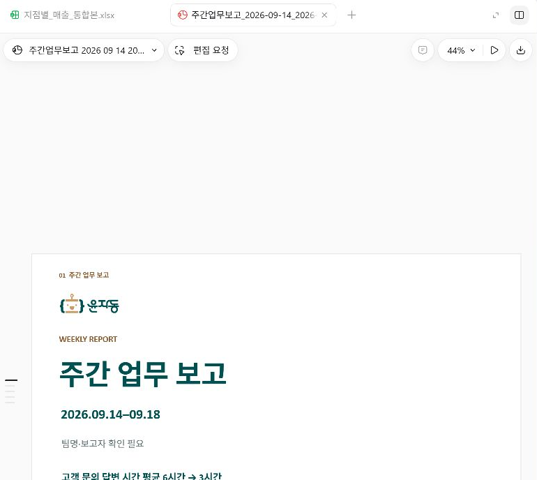
공통 요청문은 이 단계 위쪽의 복사 버튼을 사용하세요.
기본 요청과 둘 중 하나만 보냅니다. 이미 진행 중이면 응답 종료 또는 중지 상태를 확인한 뒤 사용합니다.
02_주간보고/input/이번주_업무메모.md와 02_주간보고/reference/보고양식.pptx를 바탕으로 브라우저에서 여는 5장짜리 보고 자료를 만들어줘. 표지, 이번 주 요약, 진행 현황, 문제와 요청, 다음 주 계획 순서야. 메모의 보고 기간과 숫자를 사용하고 없는 정보는 확인 필요로 남겨줘. 02_주간보고/output/주간업무보고_대체.html에 저장하고 원본은 보존해줘. 같은 이름이 있으면 시각을 붙여줘. 5장 내용과 화면 잘림을 확인하고 링크를 알려줘. 이것은 PPT 제작이 어려울 때 쓰는 대체 결과이며 실제 .pptx 완성으로 보고하지 마.
HTML로 만들었다면 실제 HTML을 브라우저에서 열어 5장을 봅니다. 다음 02-3에서는 HTML 검토·규칙 저장 요청을 고릅니다. 준비된 예시만 본 경우에는 관찰 참여로 표시하고 계정 사용이 가능할 때 02-2부터 복습합니다.
직접 만든 PPT 또는 HTML의 검토와 규칙 저장을 각각 확인했다. 예시만 본 경우는 관찰 참여다.
어느 대화? 직전 단계와 같은 대화에서 계속합니다.
02-3 전송. 수정본이 있으면 다시 열고 AGENTS.md의 실제 저장 내용도 확인한다. HTML로 만든 분은 아래 상세 안내의 02-html-review를 선택합니다. 예시만 본 분은 검토를 관찰합니다.
완성한 이번 주 PPT의 5장을 02_주간보고/input/이번주_업무메모.md와 대조해줘. 보고 기간, 완료·진행 건수, 진행률, 문제와 요청이 일치하는지 봐줘. 참고 양식의 빈칸을 없는 사실로 채우지 않았는지도 확인해줘. 모든 장에서 글자 잘림과 겹침을 가능한 방식으로 확인하고, 오류가 있으면 원본 결과를 남긴 수정본을 저장해줘. 이어서 다음 주에도 반복할 규칙을 이 프로젝트의 AGENTS.md에 기록해줘. 기존 지침이 있으면 읽고 보존하며 추가해줘. 규칙은 지정한 메모만 사용, 보고 기간은 메모 기준, 참고 양식 유지, 없는 사실은 확인 필요, input과 reference 보존, output에 새 이름으로 저장, 내용과 5장 화면 확인이야. 특정 주의 숫자는 규칙에 고정하지 마. PPT 검토 결과와 저장한 규칙의 위치를 알려줘. 다음 주 PPT는 아직 만들지 마.
현재 주의 수치를 공통 규칙에 고정하지 않는다. 기존 AGENTS.md가 있으면 보존하며 추가한다. HTML 결과는 아래 상세 안내의 02-html-review 요청으로 검토·규칙을 저장한다. 준비된 예시만 본 경우 실제 생성은 복습으로 남긴다.
채팅에는 “도움 + 실습 번호 + 보이는 상황”을 남겨주세요. 응답이 생성 중이면 같은 요청을 다시 보내지 않습니다.
필요한 항목을 펼치세요. 상세 화면·추가 요청문·대체 실습도 여기에서 확인할 수 있습니다.
다음 주에도 적용할 기준을 대화 밖에 남긴다.
공통 요청문은 이 단계 위쪽의 복사 버튼을 사용하세요.
02-2에서 HTML을 실제로 만들었다면 위 PPT 검토 요청 대신 이 요청 하나를 보냅니다. 응답이 끝난 같은 대화에서 진행합니다. 준비된 예시를 보기만 했다면 실행 완료로 표시하지 않습니다.
방금 만든 주간업무보고_대체.html의 실제 저장 경로를 먼저 확인해줘. 같은 이름에 시각을 붙였다면 이 대화에서 마지막으로 만든 파일을 사용해줘. 그 HTML의 5장 내용을 02_주간보고/input/이번주_업무메모.md와 대조해줘. 보고 기간, 완료·진행 건수, 진행률, 문제와 요청이 맞는지 확인해줘. 없는 이름·기한은 확인 필요로 남겨줘. 브라우저에서 5장을 확인할 수 있는 방식으로 글자 잘림과 겹침을 검사하고, 오류가 있으면 기존 결과를 보존한 수정본을 저장해줘. 확인하지 못한 부분은 따로 알려줘. 이어서 프로젝트의 AGENTS.md를 읽고 기존 지침을 보존하며 주간 보고 반복 규칙을 추가해줘. 지정한 메모만 사용, 기간은 메모 기준, 참고 양식 유지, 없는 사실은 확인 필요, input과 reference 보존, output에 새 이름으로 저장, 내용과 5장 화면 검토가 기준이야. 이번에는 HTML 대체 경로를 사용했음을 기록하되 앞으로의 출력 형식은 매 요청에서 지정하게 해줘. 특정 주 숫자와 기간은 공통 규칙에 고정하지 마. 검토한 HTML 링크와 저장한 AGENTS.md 링크를 알려줘. 다음 주 결과는 아직 만들지 마. 실제 PPT를 완성했다고 보고하지 마.
첫 PPT와 규칙 저장을 마친 뒤 선택한다. 오늘 공통 실습의 필수 준비가 아니다.
이 프로젝트의 AGENTS.md를 읽고 주간 보고 PPT 작업 순서를 재사용할 스킬로 만들어줘. 지정한 메모와 양식 읽기, 구성안 확인, PPT 제작, 원문·5장 화면 검토 순서야. 특정 주의 숫자나 기간은 고정하지 마. 현재 환경에서 인식되는 위치와 형식으로 만들고 저장 위치를 알려줘. 새 대화에서 선택하고 실제 읽는지 확인할 방법도 알려줘. 지금 추가 PPT를 만들지는 마.
한 사례를 골라 문제·입력·완성 결과·사람의 확인을 설명합니다. 사례가 끝나면 다음 주 PPT 재사용으로 돌아갑니다.
원하는 날짜·구간을 지켜보는 반복 작업
조건 설정 → 조회·확보 결과 → 휴대폰 알림
시연 흐름·확인할 점 →약속뿐 아니라 준비할 시간까지 연결
제안 메일 요약 → 외부 강의 → 내부 준비
시연 흐름·확인할 점 →앱 조작과 결과 기록까지 맡기기
OBS 녹화 → Codex 조작 → 결과 영상
시연 흐름·확인할 점 →브라우저에서 읽고 입력하고 확인하기
웹 정보 확인 → 입력·편집 → 결과 대조
시연 흐름·확인할 점 →전화·메신저·현장으로 들어오는 주문과 꽃 재고, 사입 판단이 서로 떨어져 있습니다.
첫 화면·시세 → 시연 주문 → 재고·정산
서비스 시연 안내 →아이와 보호자가 여러 AI 도구를 따로 익히지 않고도 자기 이야기를 작품으로 완성하도록 돕습니다.
네 가지 활동 → 준비된 동화·노래 → 3D·게임
서비스 시연 안내 →코딩을 처음 하는 학생도 무엇을 만들지 먼저 정하고, 화면과 동작을 보며 고칠 수 있는 교실용 도구입니다.
기획서 → 미리보기 → 실행·수정·공유
서비스 시연 안내 →시연을 보면서 누구의 어떤 문제인지 · 어떤 자료가 들어가는지 · 실제로 무엇이 완성되는지를 찾아보세요. 세 서비스는 강사가 기존에 만든 제작 사례이며, 모두 Codex만으로 만들었다는 의미는 아닙니다.
필요한 항목을 펼치세요. 상세 화면·추가 요청문·대체 실습도 여기에서 확인할 수 있습니다.
원하는 일은 내가 정하고, 실행 방법과 여러 단계를 AI에게 맡깁니다. 기술 용어를 모두 외우기 전에도 작은 실제 일부터 시작할 수 있습니다.
원하는 날짜·구간을 지켜보는 반복 작업
조건 설정 → 조회·확보 결과 → 휴대폰 알림
시연 흐름·확인할 점 →약속뿐 아니라 준비할 시간까지 연결
제안 메일 요약 → 외부 강의 → 내부 준비
시연 흐름·확인할 점 →앱 조작과 결과 기록까지 맡기기
OBS 녹화 → Codex 조작 → 결과 영상
시연 흐름·확인할 점 →브라우저에서 읽고 입력하고 확인하기
웹 정보 확인 → 입력·편집 → 결과 대조
시연 흐름·확인할 점 →전화·메신저·현장으로 들어오는 주문과 꽃 재고, 사입 판단이 서로 떨어져 있습니다.
첫 화면·시세 → 시연 주문 → 재고·정산
서비스 시연 안내 →아이와 보호자가 여러 AI 도구를 따로 익히지 않고도 자기 이야기를 작품으로 완성하도록 돕습니다.
네 가지 활동 → 준비된 동화·노래 → 3D·게임
서비스 시연 안내 →코딩을 처음 하는 학생도 무엇을 만들지 먼저 정하고, 화면과 동작을 보며 고칠 수 있는 교실용 도구입니다.
기획서 → 미리보기 → 실행·수정·공유
서비스 시연 안내 →시연을 보면서 누구의 어떤 문제인지 · 어떤 자료가 들어가는지 · 실제로 무엇이 완성되는지를 찾아보세요. 세 서비스는 강사가 기존에 만든 제작 사례이며, 모두 Codex만으로 만들었다는 의미는 아닙니다.
아래는 수업 후 직접 만들어볼 선택 요청입니다. 완성된 현황판 예시는 포함하지 않으며, 필수 실습은 다음 주 보고 재사용입니다.
이번 주 업무 메모를 기준으로 구성안부터 확인합니다. 원하는 구성을 확인한 뒤 별도로 제작을 요청하세요.
02_주간보고/input/이번주_업무메모.md만 내용 근거로 사용해서 브라우저에서 여는 주간 업무 현황판을 만들려고 해. 보고 기간, 완료한 일, 진행 중인 일과 진행률, 문제와 요청, 다음 주 계획을 원문에 있는 만큼 보여줘. 업무 수를 임의로 맞추거나 없는 행사·예산·담당자·기한을 만들지 마. 없는 정보가 필요하면 확인 필요로 표시해줘. 검토 완료 체크와 확인 필요 항목만 보는 필터를 넣고, 체크는 이 브라우저에만 저장된다고 표시해줘. 검토 체크로 원문의 업무 완료 상태나 진행률을 바꾸지 마. 원본 메모와 보고서는 보존하고 결과는 02_주간보고/output/주간업무_현황판.html에 저장해줘. 같은 이름이 있으면 시각을 붙여줘. 외부 발송이나 계정 연결은 하지 마. 먼저 구성안만 보여줘. 내가 확인한 뒤 제작하고 원문 대조와 화면 검토 결과를 알려줘.
Dot은 자기 사무실과 컴퓨터를 갖고, 맡긴 일을 계속 챙기는 원격 업무 담당자에 비유할 수 있습니다.
가장 큰 변화: 읽기 권한이 있는 자료와 이전 작업 맥락에서 다음 할 일을 먼저 제안받을 수 있습니다. 제안과 후속 실행을 구분합니다.
9월 29일 발표 · 대상 계정 순차 제공. 이번 수업에서는 개념을 소개합니다.
공식 근거 · 확인2026-10-05: 9월 29일 발표 · Meet dots · 작업 컴퓨터와 연결
짧은 내 부탁 → AI가 처리하는 여러 단계 → 내가 확인하는 결과
원하는 일은 내가 정하고, 실행 방법과 여러 단계를 AI에게 맡깁니다. 기술 용어를 모두 외우기 전에도 작은 실제 일부터 시작할 수 있습니다.
조건에 맞는 좌석 조회
확보 결과 알림
결제는 내가
제안 네 건 정리
외부 강의 일정
내부 준비 시간
OBS 녹화
실제 앱 조작
시연 영상 제작
강사 사용 사례의 설명도 · 메일/일정 화면은 교육용 가상 예시
내가 원하는 결과, 사용할 자료, 지킬 조건, 됐다고 판단할 기준을 알려줍니다. 클릭 순서와 구현 방법까지 모두 설계할 필요는 없습니다.
짧은 요청 예시는 교육용으로 재구성했습니다. 계정 연결·기존 규칙·중간 수정이 필요한 경우가 있으며, 한 문장만으로 전체 제작이 끝났다는 뜻은 아닙니다.기존 업무 사례 7분 · 직접 만든 웹 서비스 8분(플로라2·방과후AI3·바이브 스튜디오3) · Dot과 마무리 5분
날짜·구간·열차 조건
조회 종료 시각
결제는 직접
조건 조회 → 반복 확인
좌석 선택·예약 결과 확인
휴대폰 알림
확보된 좌석과 구간
결제 기한
직접 결제
“자동화하는 법”을 모두 배우기 전에, 필요한 도구를 만들고 고쳐 씁니다.
강사가 사용한 크롬 확장 프로그램2.0.4의 구현 설명을 확인했습니다. 현재 구현은 KTX 직통 일반실 성인 1명 조건을 다루고, 예약 결과와 중단 사유를 휴대폰에 알리며 결제는 하지 않습니다. 개발 중 수정이 있었고 이번 자료 점검에서 실제 좌석 확보를 재실행한 것은 아닙니다. 위 흐름은 실제 예약 성공 화면을 대신한 설명도입니다.
날짜만 옮기는 데서 한 걸음 더 나아가, 그 약속을 지키기 위한 일까지 연결합니다. 실제 실행에서는 연결된 계정의 기존 일정·이동 시간과 합의된 전달 기한을 확인합니다.
11/6·13·20·27 강의 14–16시, 설문 D−14·초안 D−7·확정본 D−2로 가정했습니다. 준비 시간도 별도로 잡았습니다. 아래 버튼은 표시만 바꾸며 Gmail 조회·발송·일정 등록은 실행하지 않습니다.
전체 32건 · 교육용 예시
외부 일정은 파랑, 내부 준비·전달은 초록입니다. 강사 참석을 나타내는 ⓓ를 붙였습니다. 예시의 준비 시간이 실제 강의 제작에 충분하다는 뜻은 아니며, 작업량에 맞춰 조정합니다.
제안 수락 여부, 회신 내용, 강의 조건과 전달 기한, 이동·준비 시간의 현실성을 확인합니다. 이 예시는 네 건을 이미 수락했다고 가정했으며 실제 메일·고객명·개인 약속은 사용하지 않았습니다. 전체8단계×4건이며 실제 계정의 일정 충돌 검사는 수행하지 않았습니다.
Computer Use는 화면을 보고 필요한 버튼을 누르거나 글자를 입력하며 다음 상태를 확인하는 기능입니다. 기존 앱의 화면을 통해 일을 이어갈 수 있어, 작업을 맡길 수 있는 범위가 넓어집니다.
보여줄 작업과 대상
원하는 녹화 결과
확인할 기준
OBS 녹화 시작
Codex 프로젝트·대화 조작
요청·결과·수정 과정 기록
내용과 실제 동작 일치
작은 글씨·노출 정보
화면과 소리의 전달력
“지금 파일을 누르니 코드만 보여. 내가 볼 수 있게 이 컴퓨터에서만 여는 미리보기 주소를 만들어서 브라우저로 열어줘.”
AJ01 실제 요청5의 일부 · 기술적인 원인과 수정 방법을 모두 알아야 부탁할 수 있는 것은 아닙니다.강사 영상: AJ01 v12 · 8분 7초. 본방에서는 짧은 구간만 함께 봅니다.
OBS 녹화 시작, Codex 프로젝트 생성, 요청 전송 이벤트 기록과 실제 요청 5개를 확인했습니다. 완성 영상은 편집본이며 일부 입력 장면은 실제 요청에 근거한 재구성입니다. 이 영상 전체가 무편집·실시간·한 번의 요청으로 제작됐다는 증거는 아닙니다. 완성 영상의 Codex 장면과 OBS를 조작한 제작 과정은 구분해서 설명합니다.
Computer Use도 허용된 앱·권한·화면 상태에 영향을 받습니다. “사람이 하는 모든 PC 작업을 보장한다”로 확대하지 않습니다. OpenAI 공식 Computer Use 안내 · 확인2026-10-05
Aside 같은 브라우저 에이전트는 웹페이지의 구조를 읽고 조작하며, 필요할 때 화면을 보고 클릭하는 방법도 사용합니다. Computer Use와 함께 웹 업무를 이어갈 수 있는 방향입니다. 모든 동작을 일정한 주기의 스크린샷만으로 수행하는 것은 아닙니다.
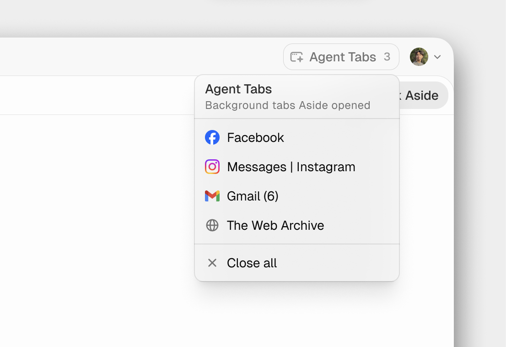
쇼핑 비교나 블로그 글 작성처럼 구체적인 일로 생각해볼 수 있습니다. 이번 수업의 해당 사이트 실행 시연은 아직 확정하지 않았습니다.
Aside 공식 기술 설명 · 확인2026-10-05. 사이트별 접근·계정 연결·실제 완료 여부는 따로 확인합니다.
꽃집 운영, 가족 창작, 학교 수업처럼 서로 다른 현장에서 만든 세 가지 서비스입니다. 문제를 정하고 화면과 작업 흐름을 만들고, 실제로 사용하며 고쳐온 과정을 봅니다.
서비스마다 사용한 개발 도구와 AI 구성이 다릅니다. 오늘 Codex로 세 서비스를 즉석 제작하거나 모든 기능을 실행하는 실습은 아닙니다.
전화·메신저·현장으로 들어오는 주문과 꽃 재고, 사입 판단이 서로 떨어져 있습니다.
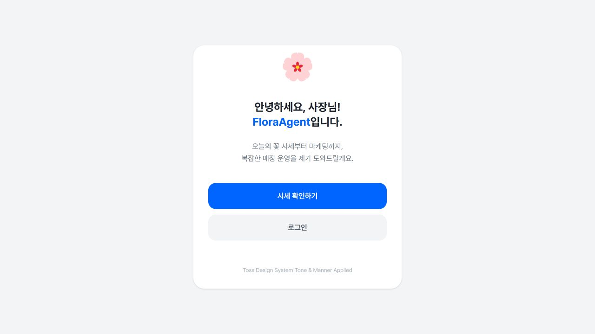
단순한 답변을 넘어, 반복해서 사용할 업무 화면과 처리 순서를 만들 수 있습니다.
주문 통합·재고·정산은 프로젝트 구현 기록에 근거한 소개입니다. 오늘 실제 주문 등록·메신저 알림·사입을 실행하는 공통 실습은 아닙니다.
플로라에이전트 실제 서비스 열기 ↗아이와 보호자가 여러 AI 도구를 따로 익히지 않고도 자기 이야기를 작품으로 완성하도록 돕습니다.
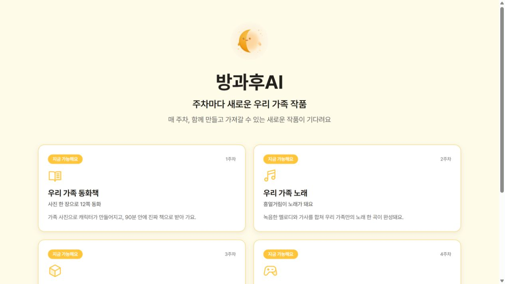
사용자가 원하는 것은 모델 이름보다, 자기 작품을 끝까지 만들고 가져가는 경험입니다.
첫 화면은 공개되어 있고 작품·운영 화면에는 로그인이 필요합니다. 수강생 가입이나 즉석 유료 생성은 필수 단계가 아닙니다.
방과후AI 실제 서비스 열기 ↗코딩을 처음 하는 학생도 무엇을 만들지 먼저 정하고, 화면과 동작을 보며 고칠 수 있는 교실용 도구입니다.
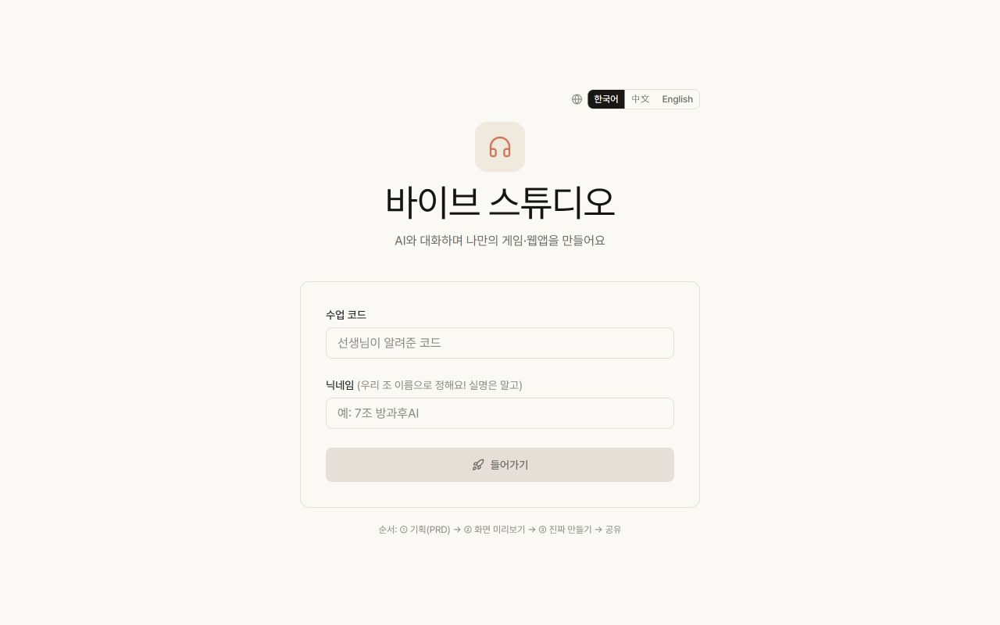
AI에게 구현을 맡기더라도 만들 사람은 목적을 정하고 결과를 직접 사용하며 판단합니다.
입장에는 수업 코드가 필요합니다. 강사 시연을 중심으로 보며, 생성 가능 시간과 계정별 사용 조건은 실제 서비스 화면에서 확인합니다.
바이브 스튜디오 실제 서비스 열기 ↗한 번 맡긴 일에서, 계속 챙길 책임으로.
OpenAI가2026년 9월 29일 발표한 Dot은 대화 사이에도 맡은 일을 이어가는 상시 가동 AI 에이전트입니다. ChatGPT의 기능이며, 필요하면 Work나 Codex 작업도 맡길 수 있습니다.
가장 큰 변화: AI가 “이 일을 먼저 하면 어떨까요?”라고 제안합니다.
사람이 할 일을 정합니다.
“설문을 읽고 강의 자료를 고쳐줘.”
AI가 맡긴 일을 수행합니다.
허용된 정보와 작업 맥락을 연결합니다.
“초보자가 많아졌네요. 설치 안내를 앞에 넣을까요?”
AI가 먼저 제안하고 내가 판단합니다.
시키는 일을 수행하는 것에 더해, 내가 놓친 변화와 다음 행동도 짚어주는 모습입니다. “무엇을 하면 좋을까”를 판단하는 과정까지 도움을 받을 수 있습니다.
기존 도구 모두가 선제 제안을 못 했다는 절대 비교가 아니라, 익숙한 지시 중심 사용에서 넓어지는 경험을 비교합니다.
Dot은 읽기 권한이 있는 정보와 관련 맥락을 조사해 유용한 제안이나 질문을 가져올 수 있습니다. 이 선제 조사는 읽기 중심이며 그 자체로 외부 발송·앱 변경·PC 조작을 실행하지 않습니다. 후속 실행에는 해당 권한과 승인이 적용됩니다.
Dot 활성화나 계정 연결만으로 모든 PC 작업·화면·대화를 상시 감시하는 것은 아닙니다. 특정 채널이나 메일의 반복·이벤트 확인은 대상과 조건을 맡기고 실제 설정을 확인하는 별도 작업입니다.
공식 설명 · Proactive research와 Event monitoring내가 맡길 일과 기준을 알려주면, 자기 사무실에서 일을 이어가는 원격 업무 담당자입니다. 결과를 가져오고, 내 판단이 필요하면 연락합니다. 다음에 이야기할 때도 진행하던 일에서 이어갑니다.
계속 챙길 목표
볼 수 있는 자료·앱
스스로 해도 되는 일
나에게 물어볼 기준
별도 클라우드 컴퓨터
자기 파일·브라우저
내 PC를 꺼도
클라우드 일은 이어가기
내 PC 접근을 별도 허용
그 PC의 파일·앱 활용
PC 온라인 유지
ChatGPT 앱 실행 필요
Always-on: 대화가 끝난 뒤에도 맡은 책임을 이어간다는 뜻입니다. 필요에 따라 멈추고 다시 일을 시작할 수 있으며, 매초 계속 계산하거나 모든 앱을 자동으로 감시한다는 뜻은 아닙니다.
Dot의 클라우드 컴퓨터와 브라우저는 내 기기·로그인 세션과 별개입니다. 내 PC의 로그인이 자동으로 옮겨가지는 않습니다. 내 PC를 연결해도 전원을 끈 상태에서 그 PC의 파일·앱을 사용할 수 있다는 뜻은 아닙니다.
별도 작업 공간이라는 점과 모든 행동이 무조건 안전하다는 뜻은 구분합니다. 연결한 계정의 자료 변경·발송에는 실제 영향이 있으므로 접근 범위와 승인 기준을 정하고 결과를 확인합니다.
2026-10-05 공식 안내: Pro100·200·500은18세 초과 사용자 중 EEA·영국·스위스 외 지역, Business Premium과 Enterprise는 전 세계 순차 제공입니다. Enterprise는 관리자가 활성화해야 합니다. 대상 요금제여도 즉시 메뉴가 보이는 것은 아닙니다.
일반 Codex 이용 조건과 Dot 이용 조건은 다릅니다. 수업 실습 때문에 Dot이나 Pro 가입을 요구하지 않습니다. Dot이 맡긴 Work·Codex 작업에는 해당 제품의 사용량 한도가 적용됩니다. 오늘은 개념 소개이며 실제 계정 생성·연결·운영 시연은 하지 않습니다.
공식 근거 · 확인2026-10-05: 9월 29일 발표 · Meet dots · 작업 컴퓨터와 연결
“이 자료로 이 일을 해줘.
이 조건은 지키고, 이렇게 나오면 됐는지 확인해줘.”
익숙해진 뒤에 쓰기 시작하는 것만이 방법은 아닙니다. 작은 일을 맡기고, 결과를 보고, 한 가지씩 고치면서 익힐 수 있습니다.
다음 주 보고 재사용으로 돌아가기이번 주 업무 메모로 구성안부터 받아 직접 만들어볼 선택 요청입니다. 완성된 현황판 예시는 포함하지 않으며, 필수 진도와는 별개입니다.
현황판 구성 요청문 · 준비된 Excel·PPT 결과 대조 예시진행 업무를 억지로 3개로 늘리지 않았다. 44/50의 88%는 해당 시험 범위로 설명했다.
어느 대화? 같은 프로젝트의 새 대화입니다.
재사용 요청을 새 대화에서 전송한다. AGENTS.md가 없으면 02-3의 규칙 저장부터 마친다. HTML로 만든 분은 아래 상세 안내의 transfer-html을 선택합니다. 해당 결과의 규칙 저장이 먼저입니다. 계획 모드가 꺼져 있는지 확인합니다.
프로젝트의 AGENTS.md를 먼저 읽고 저장된 주간 보고 규칙을 적용해줘. 이번에는 02_주간보고/input/다음주_업무메모.md만 사용해서 팀장 보고용 PPT를 만들어줘. 디자인은 02_주간보고/reference/보고양식.pptx를 따라줘. 5장 구성은 유지하되, 진행 업무는 새 메모에 있는 두 개만 넣어줘. 양식의 세 칸을 채우려고 업무를 만들거나 이전 주의 숫자와 문장을 가져오지 마. 02_주간보고/output/주간업무보고_2026-09-21_2026-09-25.pptx로 저장해줘. 기존 결과와 입력 자료는 보존하고, 같은 이름이 있으면 시각을 붙여줘. 새 보고 기간·건수·진행률을 원문과 대조하고 5장 화면을 확인해줘. 시험 결과의 비율을 넣는다면 분모와 시험 범위를 함께 밝혀줘. 결과 링크와 확인하지 못한 부분도 알려줘.
규칙이 없으면 02-3에서 먼저 저장한다. 시간이 부족하면 두 번째 생성은 복습으로 이어간다. HTML 경로는 02-html-review의 규칙 저장을 먼저 확인한다.
채팅에는 “도움 + 실습 번호 + 보이는 상황”을 남겨주세요. 응답이 생성 중이면 같은 요청을 다시 보내지 않습니다.
새 대화에서 규칙을 읽고 다음 주 메모만 지정합니다. 9/21~9/25·완료 5건·진행 2건·75/65%.
필요한 항목을 펼치세요. 상세 화면·추가 요청문·대체 실습도 여기에서 확인할 수 있습니다.
재사용은 이전 대화를 기억하는 것보다 저장된 기준을 읽는 데서 시작한다.
공통 요청문은 이 단계 위쪽의 복사 버튼을 사용하세요.
02-html-review로 규칙을 저장한 뒤 같은 프로젝트의 새 대화를 엽니다. 계획 모드가 꺼져 있는지 확인하고 위 PPT 요청 대신 이 요청 하나를 보냅니다. 완성한 새 HTML과 지난주 HTML을 함께 열어 기간과 숫자를 확인합니다.
프로젝트의 AGENTS.md를 먼저 읽고 저장된 주간 보고 규칙을 적용해줘. 이번에도 HTML 대체 경로로 진행해줘. 02_주간보고/input/다음주_업무메모.md만 내용 근거로 사용하고, 02_주간보고/reference/보고양식.pptx의 디자인을 참고해 브라우저에서 여는 5장짜리 주간 보고를 만들어줘. 표지, 이번 주 요약, 진행 현황, 문제와 요청, 다음 주 계획 순서로 만들고, 진행 업무는 새 메모의 두 개만 넣어줘. 이전 주의 숫자나 문장을 가져오거나 없는 업무·담당자·기한을 만들지 마. 02_주간보고/output/주간업무보고_2026-09-21_2026-09-25_대체.html에 저장해줘. 이전 결과와 입력 자료는 보존하고 같은 이름이 있으면 시각을 붙여줘. 기간·건수·진행률을 원문과 대조하고 5장 화면의 잘림과 겹침을 가능한 방식으로 확인해줘. 시험 결과 비율은 분모와 시험 범위를 함께 밝혀줘. 결과 링크와 확인하지 못한 부분을 알려줘. 실제 PPT 완성으로 보고하지 마.
이 브라우저에 임시 저장됩니다. 다른 기기와 동기화되지 않습니다.
결과 위치와 다음 행동을 확인합니다. 종료 시점은 현장 상황에 맞춰 안내합니다.
15건·2,374,000원·요약과 차트
이번 주 5장·저장 규칙·다음 주 결과
직접 완료 / 진행 중 / 관찰 참여를 구분합니다. 내일 맡길 일과 확인 기준을 적습니다.
필요한 항목을 펼치세요. 상세 화면·추가 요청문·대체 실습도 여기에서 확인할 수 있습니다.
오늘의 입력·기준·결과 확인을 자기 업무로 옮긴다.
내가 선택한 작업 폴더의 자료 목록과 파일 개수를 먼저 알려줘. 아직 만들거나 수정하지 마. 어떤 자료로 어떤 일을 할 수 있을지 작은 작업 하나를 제안하고, 내가 확인한 뒤 진행해.
이 브라우저에 임시 저장됩니다. 다른 기기와 동기화되지 않습니다.
현재 번호·내가 한 행동·실제 결과와 다음 행동 하나를 확인합니다.
어느 대화? 문제가 생긴 그 대화입니다.
응답이 끝났거나 강사와 중지 상태를 확인했습니다. 이 문장은 실행 중인 작업의 정지 버튼이 아닙니다.
현재 작업 폴더와 이 대화에서 완료한 단계, 아직 못 한 단계를 알려줘. 오류가 있다면 확인된 사실과 추측을 구분해줘. 아직 파일을 만들거나 수정하지 말고 다음에 내가 할 행동 하나만 안내해줘.
생성 중이면 보내지 않고 기다립니다. 강사에게 진행 중 + 번호를 알립니다.
채팅에는 “도움 + 실습 번호 + 보이는 상황”을 남겨주세요. 응답이 생성 중이면 같은 요청을 다시 보내지 않습니다.
필요한 항목을 펼치세요. 상세 화면·추가 요청문·대체 실습도 여기에서 확인할 수 있습니다.
한 단계의 실패가 전체 수업의 실패는 아니다.
공통 요청문은 이 단계 위쪽의 복사 버튼을 사용하세요.
이 목록을 외우고 시작할 필요는 없다. 화면에서 낯선 말이 나왔을 때 찾아본다.
요청과 자료를 바탕으로 도구를 사용해 파일·결과물을 만들고 수정하는 AI 에이전트.
이번 작업의 기본 위치이며 사용할 자료와 만들어질 결과를 찾는 기준.
원하는 일, 관련 자료, 지킬 기준, 결과 모양을 말해 주는 입력.
실행 전 열 대응표를 확인하고 원본을 보존한 결과를 만든 뒤 거래 수·중복·내용을 비교하는 순서.
특정 작업의 절차와 참고 자료를 묶어 다시 활용하는 구성.
스킬, MCP 서버 등 관련 기능을 설치 가능한 형태로 묶은 단위.
AI가 외부 도구와 자료에 정해진 구조로 요청하고 결과를 받도록 연결하는 공개 규격.
맡은 책임을 대화 사이에도 이어가고 변화와 판단할 일을 가져오는 클라우드 기반 에이전트.
2026-10-03 확인. 계정마다 사용할 수 있는 기능이 다를 수 있다. dot은 강사 소개이며 전원 설치 과제가 아니다.
내 자료의 실제 목록과 개수를 먼저 확인합니다.
어느 대화? 수업 후, 내가 사용할 자료 폴더의 새 대화입니다.
실제 자료를 쓸 권한과 범위를 확인했습니다. 수업 중에는 회사 자료를 꺼내지 않습니다.
내가 선택한 작업 폴더의 자료 목록과 파일 개수를 먼저 알려줘. 아직 만들거나 수정하지 마. 어떤 자료로 어떤 일을 할 수 있을지 작은 작업 하나를 제안하고, 내가 확인한 뒤 진행해.
큰 자동화 대신 파일 하나·폴더 하나로 범위를 줄입니다.
채팅에는 “도움 + 실습 번호 + 보이는 상황”을 남겨주세요. 응답이 생성 중이면 같은 요청을 다시 보내지 않습니다.